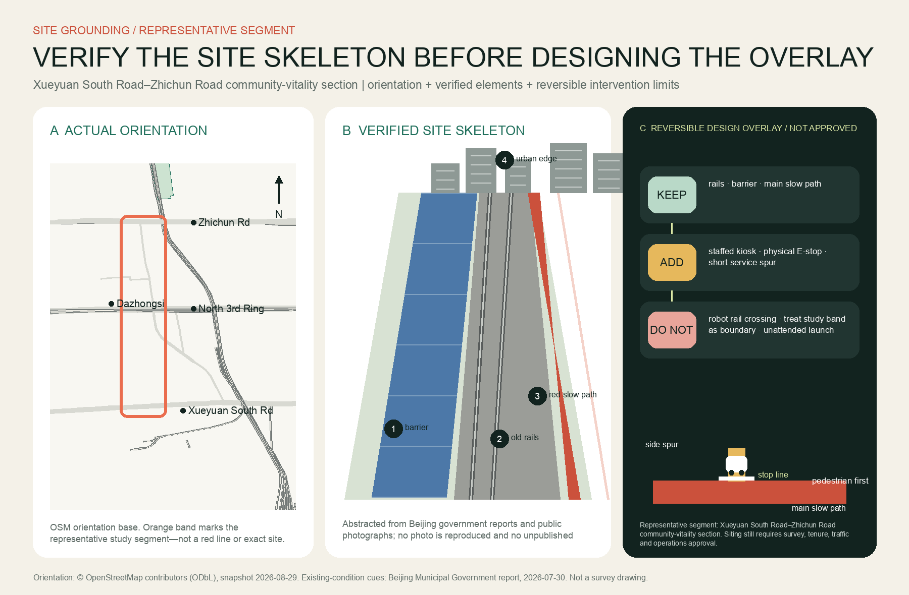
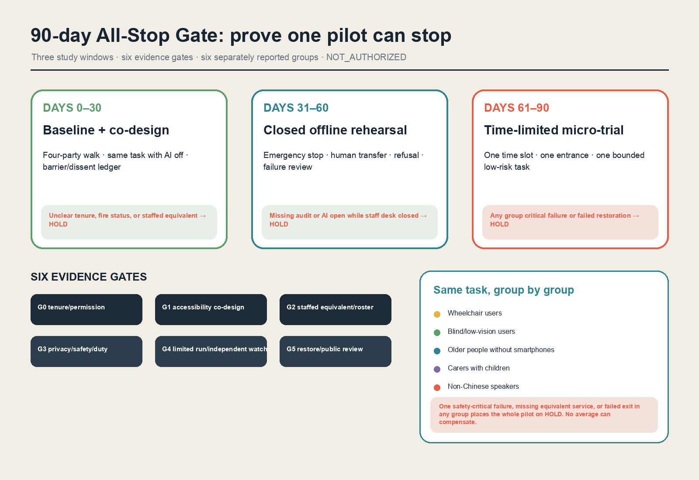
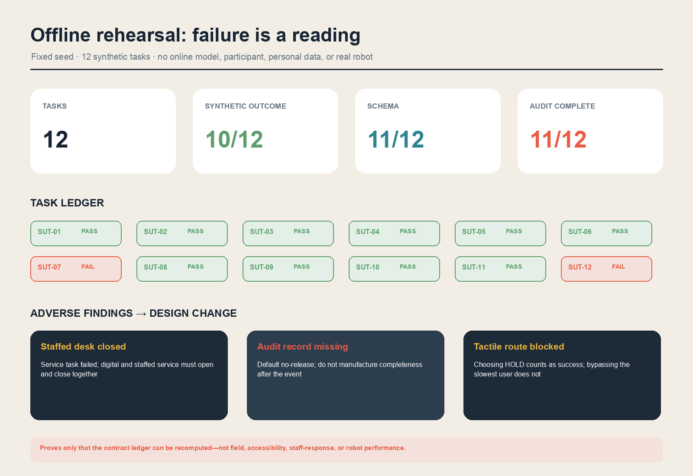
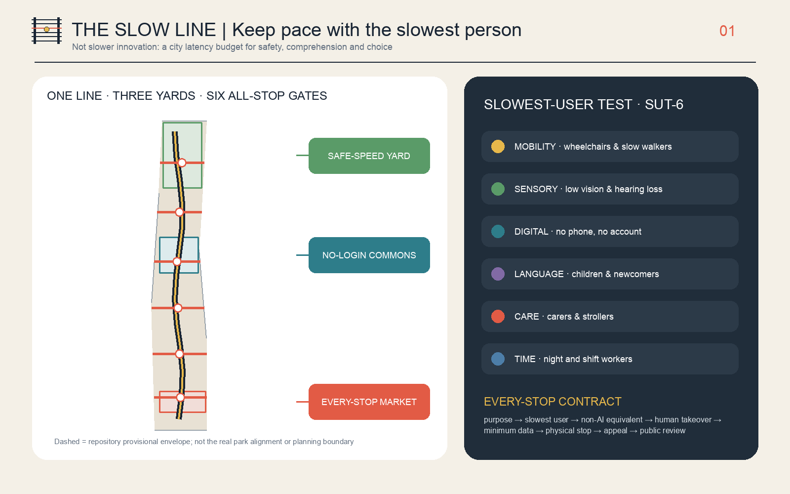
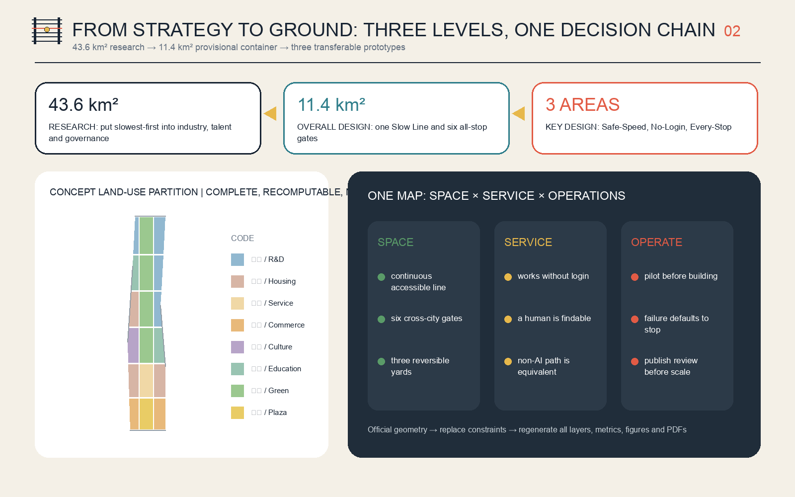
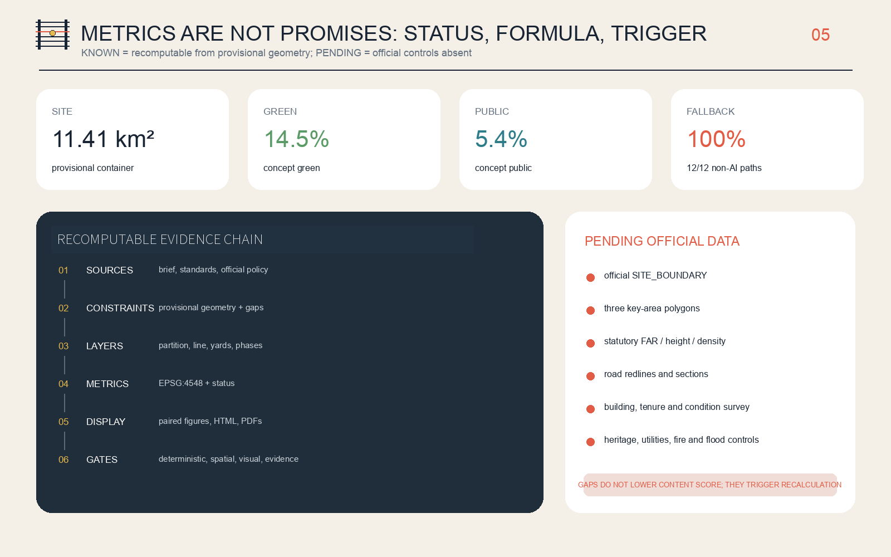

THE SLOW LINE | Keep pace with the slowest person
The faster technology moves, the more carefully the city must check who was left outside.
First answer: where is it, and what must remain
The representative segment is the Xueyuan South Road–Zhichun Road community-vitality section. Orientation comes from an attributed OSM snapshot; restored rails, blue acoustic barrier, east-side red slow path, and neighborhood edge come from Beijing government reporting. The orange band is not a redline and the figure is not a survey.

Add only reversible moves to the real skeleton
The restored rails, acoustic barrier, and red main slow path remain. The staffed kiosk, physical E-stop, and paved side spur are conceptual additions. The robot waits behind the line, never enters the main path, and never crosses the rails. The generated view is constrained by public site cues, but it is still not a site photo or official rendering.

From twelve cards to one stoppable 90-day prototype

Six groups, reported separately
Wheelchair, blind/low-vision, older people without smartphones, carers, non-Chinese speakers, and couriers/night maintainers. One critical group failure places the whole pilot on HOLD.
Failures remain visible

Space and evidence remain recomputable




Review navigator: task coverage and evidence location
These visible review tasks point to the page and structured files; they do not add field claims.
Overview map · three scopes · key areas
The spatial set shows the overall container, research–overall–key-area relationship, and three provisional key areas.
Land use · buildings · renewal projects
Concept land use, program-carrier envelopes, and nine accountability/exit-first projects remain recomputable.
Mobility · blue-green public space
The Slow Line, six All-Stop Gates, emergency clearance, continuous shade, and public space share performance gates.
AI scenarios · core metrics · task coverage
Twelve scenario cards, AI-off equivalents, pilot gates, and offline rehearsal readings map to proposal, metrics, and simulation.
Self-check status
Deterministic, spatial, visual-packaging, and professional-evidence gates persist in self_check.json.
Sources · assumptions
Authority, use limits, and pending assumptions are registered in sources.json and assumptions.json.